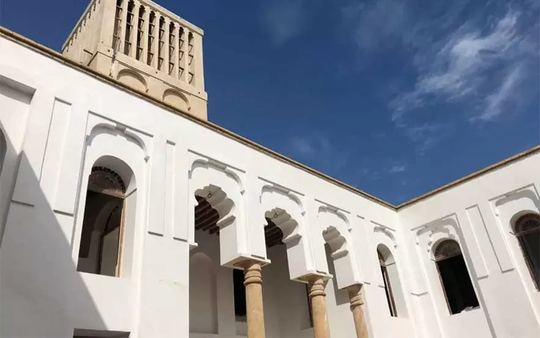

عمارت شیخ جبار یا قلعه نصوری از جاذبههای تاریخی کنگان و دیدنی های بوشهر به حساب میآید که قدمت آن به دوره قاجار میرسد. این عمارت روی تپهای بلند در نزدیکی دریا قرار دارد و از مصالحی باکیفیت و سنگهایی بزرگ با دو حیاط اندرونی و بیرونی ساخته شده است. از زیباییهای این قلعه در بزرگ چوبی، نقش گچبری ایوانها، تابلوهای شاهنامه در ایوان غربی و ستونهای سنگی با نقشهای شگفتانگیز است. آدرس: استان بوشهر، کنگان، بندر سیراف، میدان شهدا، کوچه نصوری
